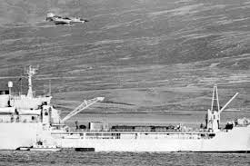
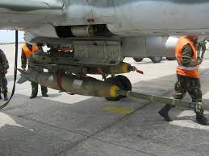
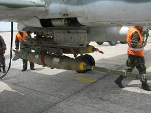
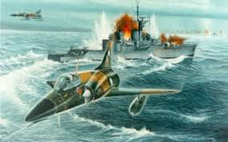
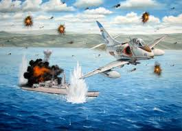
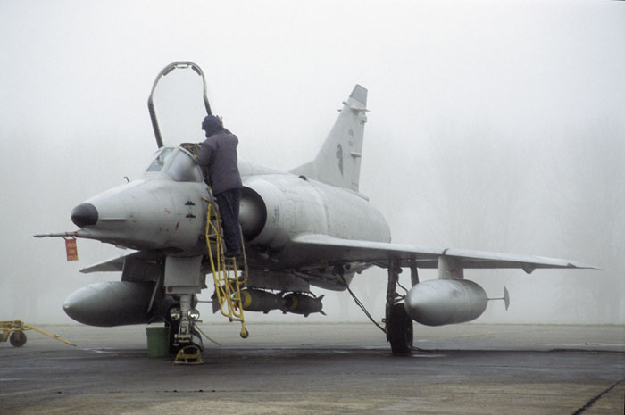

La fuerza aerea Argentina luego de evaluar distinas opciones a mediados de 1978,formalizo un contrato con Israel Aircraft industries-IAI bajo el nombre clave Dagger donde inclui la compra de 26 aeronaves de combate Nesher. El primer lote de Dagger, fué embarcado el 26 de Noviembre en el buque "Jaspers" con destino a Buenos Aires. Donde son transportados por tierra hasta el Aeropuerto Jorge Newbery donde se ejecutan tareas de despreservacion y chequeo para luego se trasladados hacia la BAM M. Moreno. Pocos día despues son trasladados a Cordoba hacia el Area Material Río Cuarto subordinada al comando de Defensa Area. Finalmente, el 28 de agosto de 1979 comienza su traslado definitivo a la base militar de Tandil conformando la VI° Brigada Aérea integrada por los Dagger del Grupo de Caza 6-G6C. En 1980 se conforma una nueva adquisicion de 11 monoplazas y 2 biplazas conjunto stock de respuestos donde permitio integrar dos Escuadrones y pasando a convertirse en la unidad mas potente dentro de la Fuerza Aérea.
Tras el recupero de las islas el 4 de Abril de 1982, El Grupo de Caza 6 DAGGER, se traslada y empieza a operar el 25 de Abril en la Base Aérea Militar San Julian (a 700 KM de la zona de operaciones) y desde la Base Aérea Militar Río Grande (690 KM).
Los dagger no tenían la capacidad de reabastacimiento donde para tal fin empleaban tanques pendulares de 1300 l limitando su operación, por ejemplo transporte de carga bélica mínima.
Las imagen de a continuación muestra las destresa de los Mirage Dagger sobre Malvinas
El material utilizado eran bombas inglesas de cola lisa de 1000 lbs y Mk82 de 500 lbs con paracaidas integrado de frenados de origen español. Para misiones de combate areo misiles Shafrir Mk IV y se realizaban en parejas. Pero en misiones de ataque anti-superficie se realizaban con secciones de 3 o 4 aviones. El equipamiento electrónico de los Dagger era austero y capacidad para navegar con seguridad en el mar. Por tal motivo las navegaciones se efectuaban bajo el control de radares que el Grupo 2 de Vigilancia y Control Aéreo tenía desplegado en Puerto Argentino y Río Grande. Tambien era soportados por el Escuadron Fenix con aviones Learjet 35.
 

Ambos escuadrones completaron 115 salidas de combate donde fueron derribados 11 aviones y la pérdida de 5 pilotos. El mayor esfuerzo se cúmplio el 21 de mayo donde se enviaron siete escuadrillas sobre el el estrecho de San Carlos. El ataque de este día de la sección Cueca contra la fragata Type 21 HMS "Ardent" le ocasión daños severos como la destrucción de su lanzador Sea CAT. Quedando indefensa ante la ecuadrilla de A4Q de la Aviación Naval que le asesto el golpe final. La fragata Type 12 HMS "Plymouth" sería la ultima nave británica en soporta daños de un ataque aéreo por la escuadrilla Perro y Gato que la alcanzaron con 4 bombas de 250 kg en horas de la tarde del 8 de junio de 1982.
 
• Libro Jorge Felix Nuñez Padin
Ir a Wiki IAI_Nesher
Ir a Wike Grupo 6
Ir a pagina Defensa